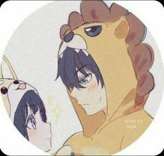
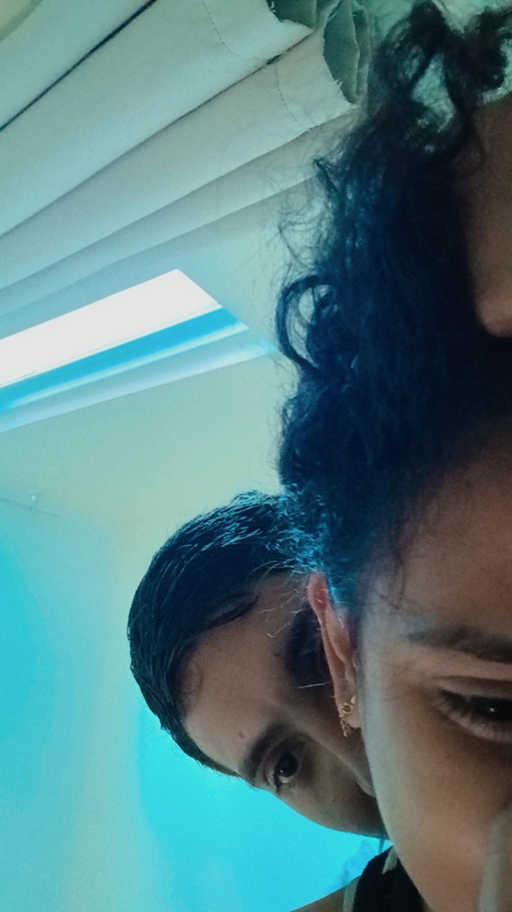

Desde que vc chegou, os meus dias ganharam mais cor, mais sorrisos e mais motivos para serem especiais.
Esta é uma pequena demonstração de tudo o q vc representa pra mim. 🥰❤️
Uma surpresa feita especialmente pra vc ❤️
Às vezes eu paro pra pensar em como a vida gosta de surpreender a gente.
Quem diria q uma simples partida de Free Fire me faria conhecer alguém tão especial ksks? Entre tantas pessoas q poderiam ter aparecido naquele dia, foi vc. E o mais engraçado é q eu não fazia ideia de q aquela partida seria o começo de uma história q significaria tanto pra mim. 🥺❤️
Com o tempo, as conversas foram ficando mais frequentes, os dias mais leves e eu comecei a perceber q sempre esperava por uma mensagem sua. Vc foi entrando na minha vida aos poucos, sem pressa, mas de um jeito q eu nunca mais consegui imaginar meus dias sem vc ksks
A distância nunca foi fácil.
Teve saudade, teve vontade de estar junto e momentos em q tudo o q eu queria era poder te abraçar. Mas, mesmo com tantos quilômetros entre nós, vc sempre conseguiu fazer eu me sentir perto de vc. 💕
E talvez seja isso q tornou tudo ainda mais especial. Porque antes mesmo de te encontrar pessoalmente, vc já tinha conquistado um espaço enorme no meu coração ksks
Durante muito tempo eu imaginei como seria te encontrar.
Pensei em várias situações, imaginei nossas conversas, imaginei o q eu sentiria naquele momento...
Mas a verdade é q nd me preparou pra quando eu finalmente te vi ksks
Eu estava nervoso, muito nervoso. Meu coração parecia estar acelerado mais do q nunca. 😅❤️
Só q, no instante em q meus olhos encontraram os seus, todo aquele nervosismo se misturou com uma sensação q eu nem sei explicar direito ksks.
Eu simplesmente fiquei admirando vc ksks
Vc estava linda.
Mais linda do q qualquer foto, e mais linda do q tudo q eu tinha imaginado ksks.
Naquele momento eu só conseguia agradecer por finalmente estar ali, ao seu lado🥰❤️
Talvez eu não seja a melhor pessoa do mundo pra demonstrar tudo o q sente através de palavras.
Mas se tem uma coisa q eu quero q vc saiba, é q vc se tornou uma das partes mais importantes da minha vida🥺❤️
Vc está presente nos meus pensamentos, nos meus sorrisos e em muitos dos momentos q tornam meus dias melhores. 🥰❤️
E se hoje eu fiz essa surpresa, foi porque vc merece saber o quanto é especial pra mim ksks
Obrigado por cada conversa, cada risada, cada momento e por ser exatamente quem vc é. ❤️✨

Pode parecer algo simples, mas essa foi a primeira foto de perfil que usamos ksks. Na época era só um pequeno detalhe, mas para mim significava muito, pq mostrava que nossa história estava começando a ganhar forma. Até hj, quando vejo essa foto, lembro do começo de tudo e de como cada pequena coisa era especial ksks. ❤️

Essa foto sempre vai ser especial para mim. Durante muito tempo eu imaginei como seria finalmente estar ao seu lado, e quando esse momento chegou, foi melhor do q eu poderia imaginar ksks. Sempre q olho para essa foto, lembro q a distância ficou para trás e q eu finalmente pude viver um momento q esperei por tanto tempo ksks. 🥰❤️
E a verdade é q essa foto tbm me deixa com mais saudade ainda, pq me faz lembrar do quanto foi bom estar com vc. Tô doido pra poder te encontrar dnv, criar novas lembranças juntos e viver mais momentos como esse ao seu lado. ❤️🥺
Minha princesa ❤️
Quando comecei a fazer essa surpresa, percebi q nenhuma foto e nenhuma música seriam suficientes para mostrar tudo o q vc significa para mim.
Às vezes eu paro para pensar em tudo o q vivemos desde aquele dia em q nos conhecemos. Quem diria q uma simples partida de Free Fire mudaria tanto a minha vida? Ksks. Entre tantas coincidências q poderiam acontecer, aconteceu justamente a melhor delas: eu conheci vc. 🥰❤️
Com o passar do tempo, vc deixou de ser apenas alguém com quem eu gostava de conversar. Vc se tornou alguém q eu queria ter por perto todos os dias, alguém q fazia meus problemas parecerem menores e meus dias muito mais felizes.
Msm quando a distância tentava atrapalhar, vc sempre encontrou um jeito de estar presente. Em cada mensagem, em cada ligação e em cada momento compartilhado, eu sentia q estávamos construindo algo especial.
E então chegou o dia em q finalmente pude te ver pessoalmente. Eu nunca vou esquecer aquele momento. Por mais q eu tivesse imaginado mil vezes como seria, a realidade conseguiu ser muito melhor. Ver vc, ouvir sua voz de perto e estar ao seu lado foi uma das melhores sensações q já vivi.
Mas o q mais admiro em vc não é apenas o seu sorriso ou o quanto vc é linda. É o seu jeito. É a forma como vc cuida das pessoas q ama (no caso de mim né, os outros q lasque ksks 😌❤️), como consegue me fazer rir msm nos dias difíceis e como faz eu me sentir alguém melhor.
Obg por cada conversa, cada risada, cada momento de carinho e por nunca desistir da gente. 🥺❤️
Talvez eu não consiga demonstrar tudo o q sinto da maneira perfeita. Talvez eu nem encontre as palavras certas para explicar o tamanho do q vc representa para mim. Mas existe uma coisa da qual eu tenho certeza:
Vc é uma das melhores coisas q já aconteceram na minha vida. 🥺❤️
E, independentemente do q aconteça, eu sempre vou guardar com carinho tudo o q construímos juntos.
Eu te amo, hoje mais do q ontem e menos do q amanhã. ❤️🥺
Com todo o meu amor,
Seu futuro marido ksks ❤️
Essa surpresa pode ter um fim, mas o meu amor por você não. ❤️
Obrigado por fazer parte da minha vida. ❤️